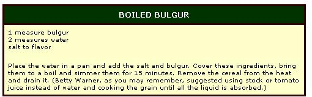
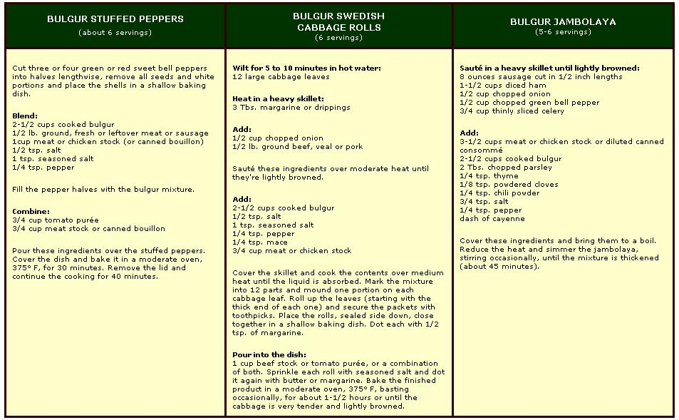
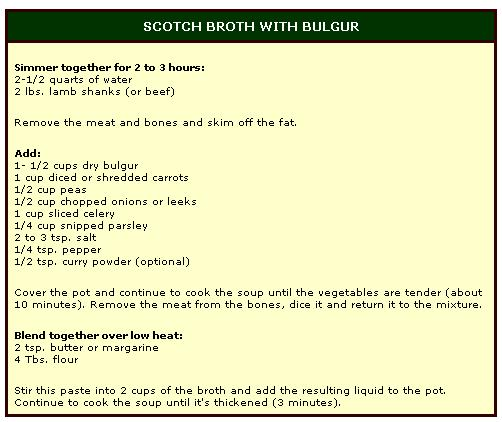

Whole wheat, most of us agree, is fine food ... but not everyone enjoys it cooked "as is". Back in MOTHER NO. 20, Betty Warner urged cereal lovers to try the parched and cracked variation known as bulgur (and described how to make and use that product at home). As some of us have learned from following Betty's directions, this Middle Eastern specialty-also called bulgor, bhulgar, burghrol or boulgour, depending on what part of that area the speaker hails from-keeps well, cooks more quickly than the whole grain and takes on a pleasant crunchy texture and nutty taste from the roasting.
The traditional way to make bulgur is by boiling and sundrying whole wheat and partially cracking the kernels with stones (see MOTHER NO. 20 for more complete directions). Those of us who do roughly the same thing in our own kitchens (with more advanced equipment) may not be aware of this country's large-scale bulgur industry, which has been turning out parched wheat by mass-production methods for the last 20 years. This is the subject of an informative booklet called Bulgur ... A New Wheat Food recently sent to MOTHER by Protein Cereal Products International, an association which promotes the use of the product in the U.S. and overseas.
The American interest in bulgur dates from the 1950's (back when we had a food surplus, remember?) and grew out of a combined effort by wheat growers, millers and government agencies to find an easily stored cereal product that would be acceptable both on the open market and in various domestic and foreign aid programs. The ancient technique of parching and cracking turned out to be a satisfactory answer, and bulgur labeled "Made in U.S.A." became a fairly common article on the shelves of well-stocked supermarkets.
Fortunately, the product that was once thought of as a good use for surplus wheat may turn out to be just as well suited to a time of scarcity. It won't be long now before many of us feel a need to dig out our copies of Diet for a Small Planet (which we conscientiously bought but never got around to using) and take a hard look at possible sources of adequate protein from the correct combination of plant and dairy foods. Those who wisely set aside part of their land for small-scale cereal growing, and those who can buy good whole wheat or commercial bulgur locally, may be especially interested in Frances Moore Lappé's suggestions for making the most of that grain.
Bulgur should be a good subject for experiments with vegetable protein, since (according to PCPI's booklet) the parching process seems to have little effect on whole wheat's nutritional qualities. (On a per-pound basis, there's a slight loss in fat, thiamine and phosphorus ... but a slight gain in protein and possibly in some other nutrients, depending on what kind of wheat is used. Hard red winter wheat makes a more nourishing bulgur than white: 11.3% protein by weight as compared to 8.5%.) Combined-by Ms. Lappé's rules-with milk, cheese, soy or sesame, what used to be a rather exotic import item can become a useful part of anyone's personal answer to the meat shortage.
Whether you're an old friend of this tasty, nutritious cereal or just feel like trying it out, you may want to sample some of the recipes provided by PCPI. Here, for those who missed the article in MOTHER NO. 20, is the basic cooking rule given in the association's brochure:
Cooked bulgur can then be used as a cereal or side dish ... or it can become the mainstay of a meal in savory combinations like the three that follow
Finally, here's a recipe that calls for dry bulgur, brewed with lamb and vegetables into a strengthening winter soup which can just about make a meat in itself.
If you'd like further information on bulgur-and a wider selection of recipes-write Protein Cereal Products International, 1030 15th Street N.W., Suite 760, Washington, D.C. 20005.-JN.
|
|
 |
 |
|
 |
|
|